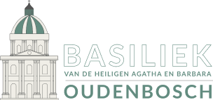
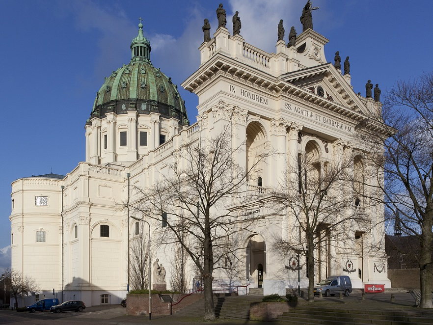
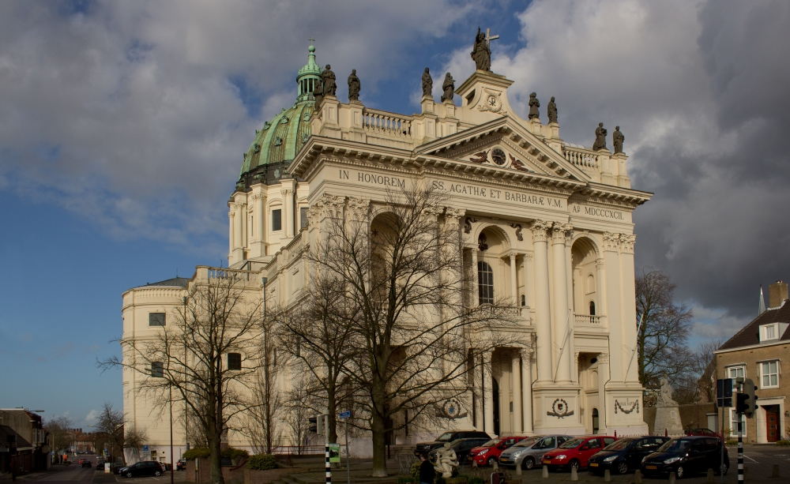
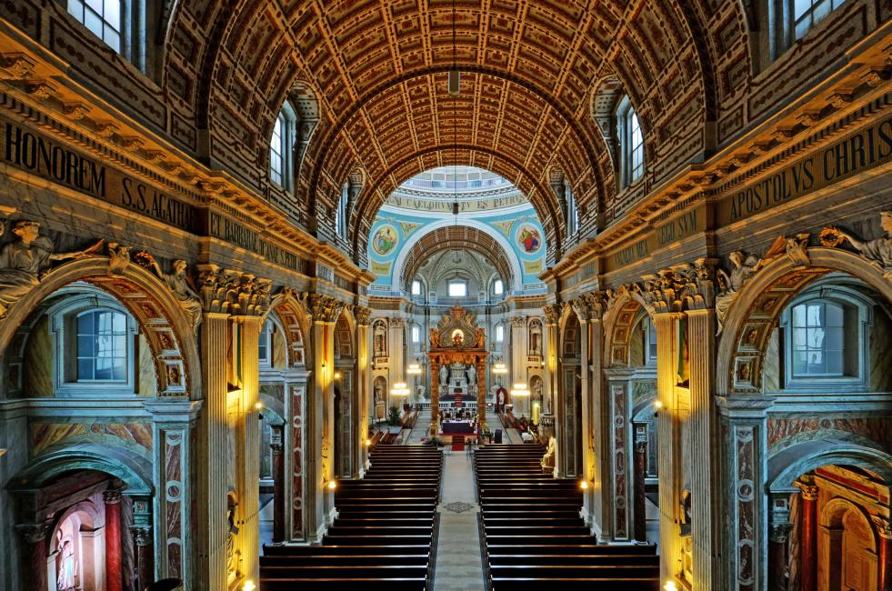
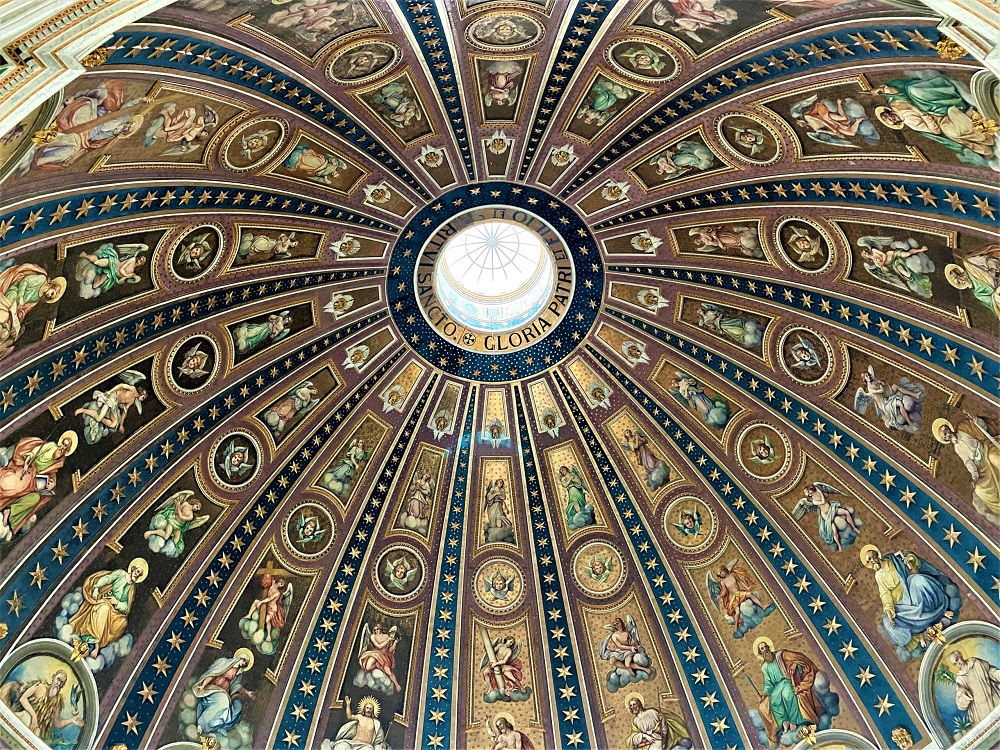

De basiliek van Oudenbosch
Home pagina
Galerij
Praktische informatie
Impressie foto's van de Basiliek
   
Hierboven ziet u enkele afbeeldingen van de basiliek om een indruk te krijgen van de architectonische schoonheid
Sfeermuziek: